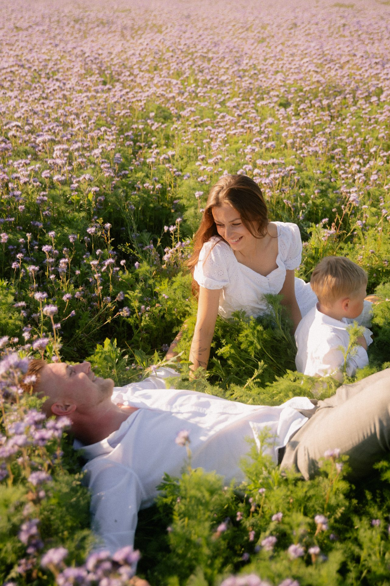
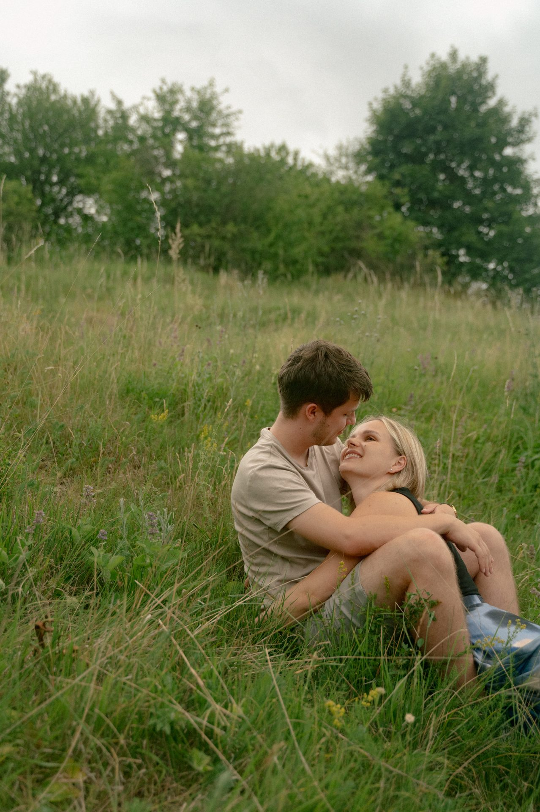
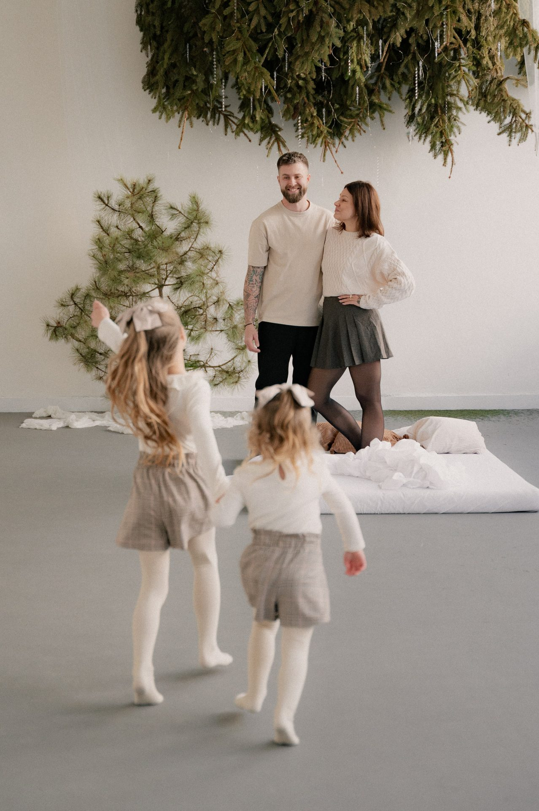
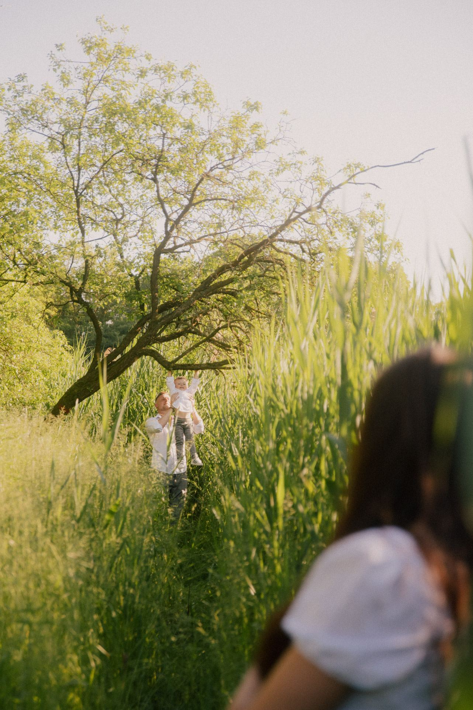
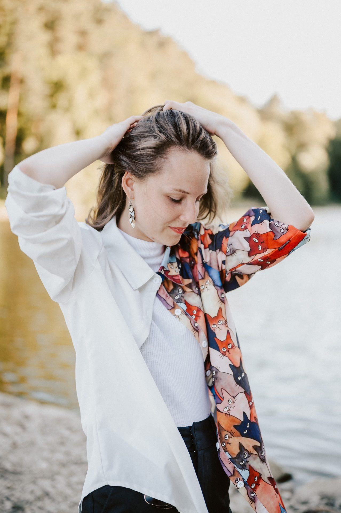

jak u mě probíhá rodinné a párové focení
Nečekejte, že se v tomto článku budu přehnaně chválit a navádět vás, abyste šli na focení ke mně a ne ke konkurenci. Ne, fakt ne😂 Tímto článkem vám chci aspoň trochu přiblížit, jakým způsobem přistupuji k rodinnému a párovému focení (ale většina platí i na portrétní🤫). Zkusím to rozřadit do bodů, aby to pro vás bylo víc přehledné.
1. víte, jaký mám styl, ale…
Předpokládám, že když se přihlásíte na focení, tak víte, jaký mám styl a jak nejspíš budou výsledné fotky vypadat. Ale pokud máte jinou představu, moc ráda si ji vyslechnu! Když se mnou bude rezonovat nebo mi bude připadat zajímavá a super, ráda s vámi vyzkouším něco, na co nejsem zvyklá.
V případě, že se naše představy vůbec nepotkají a ani jedna strana nebude chtít ustoupit, je v pořádku, když oslovíte jiného fotografa. Ráda vám nějakého doporučím, pokud mě napadne někdo, s kým si stylem sednete víc✨ Nemám ráda, když se fotografové berou jako konkurence, naopak si myslím, že je fajn si předávat práci. Zároveň věřím, že si klient musí s fotografem sednout, jde to totiž na výsledných fotkách poznat♥️
2. nebudu vás měnit a strojit do něčeho, co nejste
Při focení ode mě často uslyšíte věty jako: „Dělejte, jako kdybych tady nebyla a vy jste nevnímali nic okolo vás… jen sebe navzájem.“ nebo „Nebojte si s vaší holčičkou hrát, dělat blbosti, vzájemně se lechtat nebo si zahrát na babu.“ Důležitější je totiž pro mě autenticita než to, jestli pózujete přesně podle pravidel. Často si taky můžete všimnout, že v určitých momentech při focení mlčím. To je právě kvůli tomu, že vám chci dát prostor a zároveň se snažím vytvořit místo, které pro vás bude bezpečné.
Až se budete na fotky po pár letech dívat, které vám vyhrknou slzy do očí? Ty s velkým, ale falešným úsměvem, kde vypadáte jako z časopisu… nebo ty, ze kterých září radost, spokojenost a jsou na nich zaznamenány vaše společné chvíle? Přesně. Tak tady máte odpověď na to, proč k vašemu focení přistupuji takovým způsobem😊



3. rande?
Jeden z mých nejoblíbenějších tipů, co vám dávám, je, abyste si z focení udělali rande. A myslím to více způsoby. Zaprvé to může znamenat, že focení zařadíte do vašeho společně stráveného času a před ním nebo po něm si zajdete na rande (na kafe, procházku, do kina, cokoli…). A to neplatí jen pro páry, ale i pro rodiny!
A zadruhé tím myslím to, abyste vzali na rande i mě! Divný? Trochu. Ale věřte mi, že výsledný fotky za to stojí!! Kam rádi společně chodíte? Co spolu rádi děláte? Co vás vystihuje? Máte nějakej společnej koníček? Nebo kde jste měli vaše první rande? Říkejte, přehánějte. Plno z těchto věcí můžeme zakomponovat dohromady a voilà, místo obyčejných fotek máte ty vaše, jedinečný a s duší✨

4. počítejte s tím, že budeme chodit
Pokud budeme fotit někde venku, bude to tak trochu procházka. Má to několik benefitů. Projdeme více míst a lokací, a tak vás fotky (a doufám, že ani focení!) nebudou nudit. Na čerstvým vzduchu a při chůzi si pročistíte hlavu, a pokud nejste na focení zvyklí a máte z toho stres, může vám to dost pomoct.
Máte prostor na to, abyste si mezi focením odpočinuli a abychom se o sobě vzájemně něco dozvěděli. Baví mě se o vás dozvídat, jací jste, jaký je váš příběh, co vás baví… hlavně, když se na focení vracíte🫶🏻 Na kamarádském přístupu si zakládám, a tak je pro mě důležité, abychom si vzájemně důvěřovali.

5. nic není špatně, aneb starosti a perfekcionismus nechte doma
Nemusíte se každou chvíli kontrolovat. Pokud bude něco špatně, jsem tam od toho já, abych upozornila a případně opravila.
Když nevíte, co před foťákem dělat, jak se před ním chovat, a máte z toho strach, opravdu nemusíte mít žádné obavy. Navedu vás, pomůžu vám. Nejsem tam proto, abych si o vás myslela něco špatného, že něco nevíte nebo neznáte. Jsem váš kámoš a vždycky vám ráda podám pomocnou ruku.
Vaše dítě nemá náladu a dělá vše, jen ne a ne stát na místě? Nevadí, vždyť to děti dělají! Tak si s ním budeme chvíli hrát, budeme mu naslouchat, necháme ho, ať nám ukáže, co je v té hlíně tak zajímavého! Vždyť to jsou ty nejkrásnější okamžiky, kdy děti objevují svět a my bychom se od nich mohli v tolika věcech učit. Tady máte přesně tu autenticitu, o které jsem psala na začátku, tak se ji nesnažte přehlížet a nechte mě, ať vám zaznamenám i takové momenty. Později se už opakovat nebudou♥️


6. líná huba…
Nebojte se mluvit. Nebojte se nesouhlasit. Při focení vám budu nabízet moje tipy, nápady nebo osvědčené postupy. Pokud vám to ale nesedí a necítíte se v takových věcech dobře, tak to vůbec nevadí. Hlavně mi to řekněte a vymyslíme jinou cestu, která vám bude vyhovovat. Focení by pro vás mělo být příjemné a určitě ne něco, do čeho se nutíte. Tak se prosím nepřetvařujte, i kdyby to bylo kvůli tomu, že nechcete moje nápady urazit. Nebojte, já to ustojím a naopak budu ráda za to, že si řeknete🌸
7. fotky nemusí být jen v mobilu
Myslete na to, že fotky pořád můžete mít fyzicky v ruce. Na závěr jsem vám chtěla dát malý tip: nezapomeňte si fotky tisknout! V mobilu i v počítači se lehce ztratí, a i když se to tak nemusí zdát, nejsou nesmrtelné (soucítím se všemi, komu se taky někdy záhadně vymazaly soubory🙃).
Mám domluvenou 15% slevu na tisk fotek na kvalitnifotky.cz s kódem SOFIEZBORILOVA, kde si můžete z focení sestavit knížku nebo album, nebo si je nechat vytisknout na velké formáty. Dám ale ruku do ohně, že tisk fotek máte k dispozici v každém aspoň trochu větším městě (např. v drogerii DM nebo Rossmann), takže by to mělo být lehce dostupné. Věřte mi, mít vaše fotky fyzicky v ruce je úplně jiný zážitek♥️
Doufám, že jsem vám můj přístup aspoň trochu přiblížila a snad je vám sympatický✨ Kdybyste se ke mně chtěli objednat, můžete přes kontaktní formulář nebo můj Instagram. Budu se těšit na každého z vás a budu ráda, když mi k tomu napíšete i něco o sobě, co bychom mohli do focení zakomponovat!
S.
Znáš někoho, komu by tenhle článek pomohl? Klidně mu ho pošli.

mohlo by tě zajímat
Další články, které se ti můžou hodit.
 rady před focením · 3 min čtení
rady před focením · 3 min čteníuniverzální lokace na focení, které máte na dosah
Často mi lidé píšou, že kolem sebe nemají žádné hezké místo na focení. A pokaždé se usměju, protože krásné fotky nevznikají díky místu, ale díky vám.
číst dál
rady před focením · 5 min čteníco si vzít na sebe na focení: 7 tipů, aby ti to slušelo
Oblečení hraje na fotkách obrovskou roli. Proto jsem sepsala pár rad a základních pravidel, kterých je fajn se při výběru outfitu držet.
číst dál